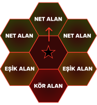
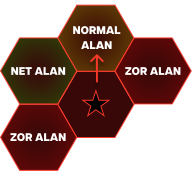
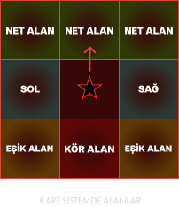
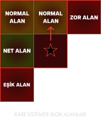

SLVNZ 3.0 sistemi, özünde D&D ve FATE sistemlerini baz ve ilham alınarak düşünülmüş, özelleştirilmiş ve detaylandırılmış bir masaüstü rol yapma oyunu sistemidir.
Sistem mümkün olduğunca oyun etkisini barındırırken, oyuncunun sistemin ördüğü sınırlara bağlı kalmadan, yaratıcılığını ve rolünü ortaya koyarak oyunun ve savaşın gidişatına yön vermesini amaçlayan esnek gerçekçiliği sunmayı hedeflemektedir.

Oyundaki eylemler, karakterinizle gerçekleştirmek isteyeceğiniz herhangi bir girişimi ifade eder. Bazı eylemler bir beceri gerektirmeden doğrudan gerçekleşebilse de SLVNZ 2.0’da bazı eylemlerin gerçekleşmesi için zar kullanılması gerekir.
Kullanılacak zarlar 20 yüzlü bir zar (d20) kullanılarak gerçekleştirilebilir.
Zar kullanımı ile gerçekleşen herhangi bir eylemin sonucu zarın yansıttığı sayının yüksekliği ile doğru orantılı bir şekilde değişir.
Oyun yöneticisi bahsedilen sayı/sayılarla ilgili özelleştirilmiş bir sınır ya da kriter belirtmediyse, sisteme göre zarın yansıttığı sayıların doğuracağı sonuçlar şu şekilde gelişebilmektedir:
| D20 | AÇIKLAMA |
|---|---|
| 1 | Kritik Başarısızlık |
| 2 | Kesin Başarısızlık |
| 3-5 | Başarısızlık |
| 6-10 | Şartlı Başarı |
| 11-19 | Başarı |
| 20 | Kritik Başarı |
Eylemlerin geneli, oyun yöneticisinin tercihine göre 10 yüzlü ya da 20 yüzlü zar kullanma seçimi yapılırken kurulmak istenilen denge göz önünde bulundurulmalıdır. 10 yüzlü zar daha dar bir yelpazede daha dengeli bir sonuç yelpazesi oluşturabilirken, 20 yüzlü zar seçimi başarıyı daha yüksek bir ihtimale yayarken başarısızlığın denk gelmesi halinde oluşabilecek cezayı daha ağır bir hale getirebilmektedir.
Zar kullanımının sonucunu yansıtan sayıların sebep olabilecekleri durumların karşılıkları şu şekildedir:
Eylem sonucunu belirlemek için nasıl bir zar kullanılırsa kullanılsın, sonucunun 1 gelmesi halinde, gerçekleştirilmeye çalışılan eylem kesin bir şekilde başarısız sonuçlanır. Bu başarısız-lığın yanı sıra ortaya çıkan sonuç, eyleme kalkışan karakter ve/veya çevresindeki karakterler için olumsuz durumlara sebebiyet verebilir. Ayrıca, kritik başarısızlık durumlarımda, karakterin sahip olduğu herhangi bir artı fazladan değer bu kritik duruma dahil edilmez.
Usta bir hırsız olan Majik, korsan şehri Sulgaran’ın en büyük iskelesindeki “Sorvalas” isimli bir yük gemisi-ne sızmaya çalışmaktadır. Geminin kıç tarafına denizden tırmanmayı başaran Majik, yük deposuna açılan bir pencereyi dışarıdan açmaya çalışmak için 20 yüzlü bir zar kullanır. Zarın sonucu 1 gelir. Majik, camı açmaya çalışmakta başarısız olmakla kalmaz, tutunduğu yerde dengesini kaybederek suya düşer ve yüksek bir ses çıkarır. Bu ses, iskele etrafındaki sivillerin ve muha-fızların dikkatini çekecektir ki o bölgeye doğru birkaç kişi neler olduğunu görmek üzere yola koyulur.
Kritik başarısızlık durumuna oldukça benzeyen kesin başarısızlık sonucunda, kritik başarısızlıktan farklı olarak karakterin başında olumsuz bir durumun oluşmadığı bir başarısızlık durumudur. Bu durumda da karakterin sahip olduğu fazladan değerler yine dahil edilmez.
Başarısızlık durumunda da karakter gerçekleştirmeye çalıştığı eylemi gerçekleştiremez. Ancak, diğer iki başarısızlık durumundan da farklı olarak, karakterin gerçekleştirmeye çalıştığı eylem doğrultusunda herhangi bir fazladan değeri bulunuyorsa sayıya eklenerek zarın sonucu değiştirilebilir. Eklenen değer ile bahsedilen sınırlar aşılmıyorsa eylem gerçekleşemez ve başarısız olarak sonuçlanır.
Gerçekleştirilmeye çalışılan eylemin kısmi olarak başarılı olması ya da gerçekleşmesiyle birlikte karakterin ve/veya etrafındaki karakterlerin başına bir bela açılmasına sebep olan bir olay ile sonuçlanmasıdır.
Karakterin gerçekleştirmeye çalıştığı eylemin başarılı bir şekilde sonuçlanmasıdır.
Gerçekleştirilmeye çalışılan eylemin kesin bir şekilde başarılı sonuçlanmasıdır. Bu başarının yanında, kritik başarısızlık sonucunda benzer bir yaklaşımda, eyleme kalkışan karakter ve/veya etrafındaki karakterlere olumlu getirisi olabilecek bir durumun bu sonuca dahil olmasını gerektirir.
Usta hırsız Majik, suya düştükten sonra etrafta toplanan insanlar tarafından fark edilmemek üzere geminin ters tarafında gizlenmeye çalışır. Gizlenmeye çalışırken bir GİZLİLİK zarı kullanır. Zar sonucu 20 ile sonuçlanır. Majik, kimse fark etmeden geminin kıç tarafındaki bir çıkıntıya tutunarak kendini sudan çeker ve iskeleye tamamen ters bir noktada gözden kaybolmayı başarır. Bu sırada, geminin depo alanında bulunan bir miço, depo penceresini açıp neyin düştüğüne bakmak üzere dışarıya bakar, bir şey göremeyip pencereyi kapatmayı unutarak içeriye döner. Majik, ortamda yaşanan karışıklığı da kendine avantaj edinerek açılmış olan pencereden içeriye girer.
Bazı durumlarda karakterlerin spesifik eylemleri gerçekleştirmelerinde onlara fayda sağlayabilecekleri nitelikleri bulunmaktadır. Bu nitelikler, herhangi bir karakterin sahip olduğu en temel özellikleri vurgular.
Karakterin kas gücü ile gerçekleştirebileceği eylemleri belirleyen niteliktir. Bu eylemler ağır bir nesneyi kaldırma, bir şeye vurma durumunda uygulanan kuvvet, mücadele sırasında bir şeye asılma vb. gibi durumları oluşturur. Bir karakterin kuvvet niteliği ne kadar yüksek ise, bu niteliği gerektiren eylemleri başarma kapasitesi de o kadar yükselir.
Karakterin hızlı hareket etme, ani tepki verme, kaçınma vb. eylemlerinde ihtiyaç duyduğu niteliktir. Bir karakterin çevikliği ne kadar yüksek ise o kadar atik ve hareketli olduğu düşünülebilir. Bu nitelik aynı zamanda karakterin yakın dövüşte silahını, yumruğunu veya tekmesini rakibe isabet ettirmesinde fayda sağlayabilirken, savunma konusunda da gelen darbelerden kaçınma becerisini de etkileyebilen bir niteliktir.
Karakterlerin darbelere dayanma, yıkıcı durumlara karşı ayakta kalabilme, ağır durumlarda bilincini koruyabilme ya da acıya dayanma gibi durumlarda ihtiyaç duyduğu niteliktir. Aynı zamanda bir karakterin STAMINA değerini de etkilemektedir.
Dayanıklılığa benzer biçimde karakterin zihinsel dayanıklılığında; yani zihinsel olarak gireceği herhangi bir mücadelede ihtiyaç duyacağı niteliktir. Bu mücadeleler herhangi bir büyü etkisi altında kalma, zihne sızma, isteği dışında telepati vb. etkilerin altında kalma gibi durumlar olarak nitelendirilebilir.
Karakterin geçmişe yönelik tarihi bilgilerini, bir konuya yönelik bilgi birikimlerini, zor bulmacalar ve bilmeceleri kavrayabilme yetilerini etkileyen bir niteliktir. Aynı zamanda yüksek zekâya sahip karakterler, bilgileri öğrenme, algılama ve aklında tutma konusunda avantaj sahibidirler. Bunun anlamı, zekâ niteliği yüksek karakterlerin bazı bilgileri öğrenme eğrilerinin normal bir karaktere göre daha yüksek olmasıdır.
Karakterlerin başka karakterlerle olan iletişimlerinde, şüpheli buldukları karakterlerin davranışlarının altında yatan gerçeği anlama, bir kişinin yalan söyleyip söylemediğini kavramaya çalışma gibi durumlarda ihtiyaç duyacağı niteliktir. Aynı zamanda irfan sahibi karakterlerin algıları daha açık olacağından, irfan niteliğinin sağlayacağı avantaj sayesinde farkındalıkları olumlu yönde etkilenmektedir. Benzer biçimde irfan sahibi karakterler enerji dolu auraları fark etme ve bu enerjilerin yoğunluğunu tanılama konusunda da daha yetkin durumdadırlar.
Niteliklere benzer olarak karakterlerin bazı özel durumlar için ihtiyaç duyacağı beceriler bulunmaktadır. Beceriler, niteliklere benzese de onlar kadar fazla durumda kullanılmayabilirler. Beceriler, Temel Beceriler ve Özel Beceriler olmak üzere ikiye ayrılır.
Bir karakterin kendisine yönelmiş bir saldırıyı durdurabilme becerisidir. Bu beceri, karakterin kuşandığı bir silah veya kalkan ile gerçekleştirilebilir. Kalkan ile gerçekleştirilen bir bloklama becerisi, saldırının tamamını absorbe etme imkânına sahiptir ancak kalkanın kuşanıldığı kola fiziksel bir stres bindirir. Silahla gerçekleştirilen bloklamalar ise farklı şekillerde fiziksel yeteneklerle harmanlanabilir, ancak başarısızlık durumunda karakterin saldırıyı tamamen göğüslemek durumundadır.
Bir karakterin kendisine yönelmiş bir saldırıdan kaçınma becerisidir. Karakter, bu beceriyi ÇEVİKLİK niteliğiyle harmanlarken, üstüne gelen saldırıdan en az hasar ile sıyrılmaya çalışır. Çoğunlukla uç uca isabetlerde kesikler ve sıyrıklar gibi hasarlarla sonuçlanırken, mücadele zarlarında makasın açılmasıyla bir karakterin kaçınabildiği hasar seviyesi yükselir.
El yordamıyla fırlatılabilen araçlar ve silahlar ile (Cirit, El Sapanı vb.) gerçekleştirilen isabet ettirme becerisidir.
Nişangâhı olan menzilli silahlar ile (Musket, Crossbow vb.) başarılı isabet sağlamak için nişan alma becerisidir.
Ok ve yay kullanımıyla gerçekleştirilecek atışlarda saldırıyı isabet ettirebilme becerisidir.
El ve göz koordinasyonu ile işaret ederek menzildeki bir hedefe isabet ettirme becerisidir (Asa & Enerjisel odak kullanımı vb.).
Karakterin özellikle görme ve duyma yetisiyle çevresindeki detayları fark edebilme becerisidir. Bu beceri, çoğunlukla geniş kalabalık bir görüntüdeki ufak detayların farkına varma, kalabalık bir ortamda belirli konuşmaları ayırt etme, fısıldayan birilerini dinlemeye çalışma ya da kendiliğinden duyma, gizlenmiş bir şeyleri olduğu yerde fark etme gibi durumlarda kullanılmaktadır. Aynı zamanda bu beceri, İRFAN niteliğinden de beslenmektedir.
Farkındalık becerisine karşılık karakterlerin özellikle görme ve duyma gibi hislere karşı fark edilmeden ilerleyebilme ya da kendilerini fark edilmez kılmalarını sağlama girişimlerini ifade eden beceridir.
Karakterin belirli bir bilgi veya nesneyi ilgili bölgede arama yöntemlerine olan hakimiyeti belirler. Farkındalıktan ayrı olarak, karakterin eylem alarak detayları kurcalaması, test etmesi ve kullanması gibi süreçlerin takibinde sonuçlanır. Araştırma becerisi, aynı zamanda ZEKÂ niteliğinden beslenir.
Karakterlerin hakim oldukları vahşi biyomlarda yön bulma, vahşi hayatı tanıma ve buna karşı fikir üretme, biyomlar harici genel vahşi hayatta kalmaya yönelik bilgilere hakim olma ve bunları kullanma becerisidir. İzcilik becerisine sahip olan bir karakter, vahşi hayatta iz sürme, korunaklı sığınak bulma & tanımlama, ateş yakma, düğüm atma vb. becerilerin tümüne seviyesine göre bir miktar hakimdir.
Karakterlerin sosyal olarak farklı oyuncu harici karakterleri etkileyebilme becerisidir. Bu beceri, bilinen pek çok sistemde alışılmışın aksine doğrudan diğer karakterlerin üstünde mutlak bir etki oluşturulmasını sağlamaz. Çoğunlukla karakterleri bir yalan karşısında ikna etme veya inandırıcı görünme, gerçekleştirilen bir dans hareketi ile etkileyici iz bırakma gibi destekleyici etkilere sahiptir. Ancak sistemde her karakter oyuncu karakterinin söylediği şeyler veya etkileme girişiminde bulunduğu hamlelerden etkilenmeyebilir. Bu beceri, genel olarak bu denemelerde oyuncu karakterinin kendisine katabileceği etkileyiciliği artırmakla ilgilidir.
Karakterlerin yaraya ve hastalığa müdahale ile ilgili kısmi tıbbi bilgisi ve becerisini ifade eder. Bir yarayı dikmek, cerrahi bir müdahalede bulunmak, basit bir soğuk algınlığının müdahale sürecine hakim olmak gibi durumlar bu beceriyi kapsamaktadır.
Bir karakterin vahşi veya evcil olarak bir hayvana karşı iletişim ve etkileşim becerisini ifade eder. Bu beceriye bir hayvanla iletişim kurmaya çalışmak, sürülen bir hayvanı yönlendirmek, sakinleştirmek ve evcilleştirmek dahildir.
Özel beceriler, temel becerilerin dışında kalan ve karakterin kendisini geliştirmek istediği herhangi bir beceriyi içerir. Bu beceriler tamamen oyuncunun yaratıcılığına ve karakterini kişiselleştirme kapsamında nasıl ilerletmek istediğine bağlıdır. Özel becerilere şu şekilde bazı örnekler verilebilir:
Aşçılık: Bir karakterin yemek yapma konusundaki ustalığını belirler.
Simyacılık: Bir karakterin simya malzemeleri hakkında bilgisini ve bu malzemeleri kullanarak iksir oluşturabilme becerisini belirler.
Yüzücülük: Bir karakterin suda yüzme becerisini belirler.
SLVNZ 3.0’da büyü yapmak ya da sisteme daha uygun tabiri ile enerjiyi yönlendirebilmek mümkündür.
Enerjiyi yönlendirebilmek için evrende bulunan farklı enerji türlerine hâkim olmak gerekir.
Bu enerji türleri Temel Enerji Türleri ve Özel Enerji Türleri olarak birbirinden ayrılırlar.
Temel enerjiler, evrendeki pek çok varlığın mana aracılığıyla dönüştürebileceği enerji türleridir.
Özel enerjiler ise daha çok duruma bağlı olarak varlıkların sentezleyebileceği ve hissedebileceği enerjilerdir.

Yıkım enerjisi, çoğunlukla parçalamak, yok etmek ve hasar vermek üzerine doğrudan gerçekleştirilen yeteneklerin dönüştüğü enerjidir. Diğer yandan, canlıları iyileştirmek için de kullanılabilmektedir.

Kehanet enerjisi, çoğunlukla bir şeylerin yerini bulmak, farklı yollarla bilgi edinmek, gelecekle ilgili potansiyelleri görmek & anlamak gibi soyut işlevlere sahiptir.

Oluşturma enerjisi, doğrudan enerjiyi maddeleştirerek silah meydana getirme, hizmetkâr oluşturma, çevresel etkiler ortaya çıkarma gibi farklı etkiler oluşturma gibi işlevlere sahiptir.

Koruma enerjisi, kullanıcı varlık veya çevresindeki varlıklar üzerinde koruyucu, muhafaza edici ya da engelleyici etkiler oluşturma işlevine sahiptir.
Dönüştürme enerjisi, kullanıldığı çevrede, nesneler veya varlıklar üzerindeki materyal veya formu başkalaşıma uğratarak farklı hallere getirme işlevine sahiptir.

İllüzyon enerjisi, enerjisel olarak görünür etkiler meydana getirme, optik yanılsamalara sebep olma gibi özelliklerin meydana gelmesini sağlayan bir işleve sahiptir.

Efsun enerjisi, varlıkların zihinlerini manüple etmeye, akıllarını karıştırmaya veya onları ikna etmeye yarayan etkileri meydana getiren bir işleve sahiptir.

Çürüme enerjisi, ölmüş varlıkların bedenlerini kontrol etmeye, onları canlandırmasına veya onların ruhlarını etkilemeye yarayan etkileri meydana getiren bir işleve sahiptir. Aynı zamanda canlı yaşamına zarar verme ve onları zayıflatma etkileri de yaratabilir.
Özel enerji türleri, temel olanlara kıyasla daha özel ve erişimi zor veya bazı şartlar taşıyan enerjilerdir. Bu türde enerjiler genel olarak doğada sıklıkla karşılaşılabilen değil, nadiren ortaya çıkan ya da özel bir çaba ile ortaya çıkarılabilecek türden enerjilerdir.

Genellikle Ruhbanlar ve Kutbanlar tarafından benimsenen, inançları doğrultusunda iman ettikleri ilahi varlıklardan yansıyan enerjinin bir tezahürü olarak betimlenir.

Doğrudan Sehharların (Warlock) kullandığı enerji türüdür. Bu enerji türü üstün bir varlığın kendi güçlerini başka bir varlığa lütfetmesi ile ortaya çıkar ve iki varlık arasındaki bağın güçlenmesi ile yükselir.

Fiziksel olarak ortamda bulunan kanı ana element olarak kontrol etme yetisi kazandıran enerji türüdür. Bu kan kontrolü, varlıkların kapsadıkları auralarının haricindeki dış mekanda bulunan serbest bir kaynaktan kullanılabilir. Örneğin: Yere dökülmüş bir kan öbeği, şişede duran bir miktar kan vb.

Evrende bulunan dengesiz enerjiyi kontrol altına almayı sağlayan enerji türüdür. Kaos enerjisini kontrol etmeye çalışan varlıklar, yoğun kullanımının sonucunda ortaya çıkabilecek kaotik sonuçlar çevresinde bir karmaşa içinde bulunurlar.

Karanlık enerji, evrende bulunan bütün enerji türlerini manüple etmeye ve onların doğalarını bozarak bambaşka etkiler uyandırılmasına sebep olan tehlikeli bir enerji türüdür. Karanlık enerjiyi kullanmak, varlığın kendi veya çevresindeki hayatı tüketmesine sebep olur.

Aydınlık enerji, kutsal özellikleri taşıyan, yıkım, koruma, oluşturma, illüzyon, kehanet ve cezbetme enerjilerinin imkânlarını kapsayan bir enerji türüdür. Aydınlık enerjiyi kullanmak varlığın kendisine herhangi bir zarar vermez, ancak evrenin her yerinde bulunan karanlığı ve içinde barınan varlıkları kışkırtır.

Aydınlık enerji, kutsal özellikleri taşıyan, yıkım, koruma, oluşturma, illüzyon, kehanet ve cezbetme enerjilerinin imkânlarını kapsayan bir enerji türüdür. Aydınlık enerjiyi kullanmak varlığın kendisine herhangi bir zarar vermez, ancak evrenin her yerinde bulunan karanlığı ve içinde barınan varlıkları kışkırtır.

Yaşam enerjisi, bir varlığın temel yapıtaşıdır. Bir varlığın ruhtan ve bedenden ayrı var oluşundaki yaşayabilme kapasitesinin varlığıdır.
Karakterlerin nitelikleri, becerileri ve enerjilerinin yanı sıra bunları da dâhil ederek kullanabileceği yetenekleri bulunmaktadır. Bu yetenekler oyuncunun karakterinin yürümesini istediği yola göre şekillenmektedir. Karakter yetenekleri, fiziksel ve enerjisel olmak üzere iki ayrı dalda oluşmaktadır. Fiziksel yetenekler, kaynak olarak karakterde STAMINA tüketirken, enerjisel yetenekler MANA, RUH, Kİ ve YAŞAM enerjisi tüketebilirler. Ancak, bazı fiziksel yeteneklerin de enerjisel kaynaklar tüketmesi mümkün olabilir.
Fiziksel yetenekler, çoğunlukla yakın dövüş konusunda ustalaşan ya da menzilli araçlar kullanan karakterlerin ihtiyaç duyduğu yeteneklerdir. Genellikle kas gücü gerektirdiği için karakterlerin STAMINA değerlerini tüketen fiziksel yetenekler, kimi zaman enerji ile harmanlanarak farklı etkiler doğurabilen yeteneklere dönüşebilmektedir. Fiziksel yeteneklerin bu şekli Savaş Sanatı olarak adlandırılmaktadır.
Enerjisel yetenekler (Büyüler), doğada bulunan kaotik enerjinin vücuda çekilip kontrol altına alınırken dışarıya istenilen şekilde evirilerek aktarılması sonucu ortaya çıkan yeteneklerdir. Bazı karakterler sadece enerjisel yetenekler konusunda ustalaşma yolunda gidebilse de fiziksel mücadele konusunda ilerleyen karakterler de enerjisel yetenekler konusunda kendini geliştirmek isteyebilir. Bu durum, fiziksel yeteneklerdeki savaş sanatı ile karıştırılmamalıdır. Örneğin, savaş sanatı yeteneği olan bir karakter her vuruşunda bir miktar MANA harcamak kaydıyla vuruşlarını ekstra güçlendirebilir. Ancak, benzer bir karakter doğrudan enerjisel yetenek kullanarak, STAMINA harcamaya gerek kalmadan sadece MANA harcayarak silahını enerji kullanarak bir element ile efsunlayabilir.
Savaş sanatları, özellikle fiziksel yetenekler gibi kas gücüne dayanan ancak bu gücü enerjisel yönlendirmelerle harmanlayan özel savaş manevralarının ortaya çıkarttığı etkilere sahiptir. Bu etkiler, çoğunlukla karakterlerin savaştıkları silahların üstünden uyandırılabilecek veya yaptıkları hamleler ile birlikte meydana gelecek çevresel tepkiler şeklinde yorumlanabilir.
İki yetenek türünde de anlık gerçekleşen ya da bir süre boyunca mevcut kalan etkiler bulunabilmektedir.
Bir süre boyunca etkin kalan bazı yeteneklerin sürdürülebilmesi için odak ya da konsantrasyon gereklidir ve karakterlerin odaklanma/konsantre olma konusunda sınırlılıkları bulunmaktadır.
Odak, fiziksel yetenekler için kullanılırken; konsantrasyon, enerjisel yetenekler için kullanılmaktadır.
Bir yetenek üstünde odaklanırken ya da konsantre olurken, eğer karakter bu konuda yetkin değilse birden fazla yetenek üstünde bu yoğunlaşmayı gerçekleştiremez.
Konsantrasyon gerektiren yeteneklerde, karakter zihnini ortaya çıkardığı enerjinin dağılmadan dışarıda kalabilmesi için kendini odaklamış olur. Odak gerektiren yeteneklerde ise karakter, algılarını yeteneğin akışına odaklayarak duruşunu korur.
Karakterlerin odaklanma ya da konsantrasyon sırasında alacağı herhangi bir hasar, odaklanmayı/konsantrasyonu bozulma tehlikesine sokar. Karaktere isabet eden saldırının türüne ve kuvvetine göre GM bir sınır belirlemekle yükümlüdür.
Eğer belirlenmek istenmezse Sayfa 1 üstünde bulunan başarı tablosu baz alınabilir.
Ancak, bu durumda konsantrasyon/odağın sadece bozulma ve korunma durumu bulunmaktadır.
Kritik başarısızlık, şartlı başarı ve kritik başarı durumları böyle bir senaryoda devre dışı bırakılmalıdır.
Karakterler odak ya da konsantrasyon yapabilme kapasitelerini geliştirebilirler. Bu durum, karakterlerin odak yuvası ve konsantrasyon yuvası sayılarını artırması demektir.
Aktif bulunan her konsantrasyon ve odak gerektiren yetenek için, bir yuva doldurulur, yetenek sona erdikten sonra boşaltılır. Konsantrasyon ve odak yuvalarının nasıl geliştirildiğine Karakter Gelişimi bölümünden bakabilirsiniz.
SLVNZ 3.0’da karakterlerin ekipman kullanımlarının ayrı bir yeri bulunmaktadır. Karakterlerin sahip olduğu ekipmanlar, karakter niteliklerini doğrudan etkileyebilmektedir. Kuşanılan ağır bir zırh, üstün bir savunma sağlarken karakterin hareket kabiliyeti, çevikliği, gizlenme becerisi gibi farklı özelliklerini olumsuz şekilde etkileyebilmektedir. Benzer biçimde kuşanılan silahlar da benzer etkileri barındırabilmektedir. Bu durumlara bağlı olarak farklı ekipmanlar ve karakterin özellikleri üzerindeki etkileri tablolarda belirtilmiştir.
| Zırh Tipi | ÇEVİKLİK | GİZLİLİK |
|---|---|---|
| Zırhsız | 0 | 0 |
| Deri Zırh | 0 | 0 |
| Sertleştirilmiş Deri Zırh | -1 | 0 |
| Yarım Plaka Zırh | -2 | -1 |
| Zincir Zırh | -3 | -2 |
| Pullu Zırh | -3 | -2 |
| Tam Plaka Zırh | -4 | -3 |
Zırhlar, karakterlerin fiziksel saldırılardan ve birçok enerjisel saldırıdan korunmasına olanak sağlar. Ancak koruma seviyesi yükseldikçe, donanımlı korunma beraberinde bazı dezavantajları getirir. Bu dezavantajlar, tabloda gösterilen nitelik ve beceri eksileriyle sınırlı kalmayabilir. Örneğin, oyun yöneticisinin tercihine bağlı olarak, bir karakter giydiği miğferden dolayı farkındalık becerisine eksi değer alabilir.
| Silah Tipi | İSABET |
|---|---|
| Hançer | +3 |
| Satır | +2 |
| Kısa Kılıç | +1 |
| Normal Kılıç | 0 |
| Uzun Kılıç | -1 |
| Büyük Kılıç | -2 |
| Savaş Baltası | -1 |
| Büyük Savaş Baltası | -2 |
| Topuz / Çekiç | -2 |
| Büyük Topuz / Çekiç | -4 |
| Zincirli Gürz | -3 |
| Büyük Zincirli Gürz | -6 |
| Mızrak | 0 |
| Uzun Mızrak | -2 |
| Pike | -4 |
Her silah tipinin kendine özgü niteliklerinin bulunmasının yanı sıra karakterler bu silah tipleri üzerinde antrenman yaparak kendilerini geliştirebilir, silahları daha isabetli savurma konusunda ve ileride silah tiplerine özgü farklı yeteneklere sahip olmak için ilerleyebilirler.
| Kalkan Tipi | BLOK | ÇEVİKLİK |
|---|---|---|
| Kalkansız | 0 | 0 |
| Buckler | ÇEV | 0 |
| Ufak Kalkan | ÇEV | 0 |
| Normal Kalkan* | +3 | -1 |
| Kule Kalkan | +6 | -3 |
Kalkanlar, zırhların yanı sıra karakterlere ekstra korunma imkânı tanıyan ekipman türüdür. Bir karakter kalkanla kullanım tarzını şekillendirerek iki farklı şekilde korunabilir. Kalkanda ve birçok yetenek içeriğinde kullanılabilecek bu ve buna benzer durumlara Poz ismi verilir. Kalkan için kullanılabilen pozlar Savaş Pozu ve Tam Blok Pozudur. Bu pozların kullanılabileceği kalkan tipleri Normal Kalkan ve Kule Kalkan tipleridir. Bunların dışında kalan diğer kalkan türleri blok için karakterin çeviklik niteliğini baz alır.
Karakterin kalkanı tuttuğu normal savaş duruşudur. Bu duruşta karakter gelen saldırıyı bloke etmek için kuşanmış olduğu kalkanın blok niteliğini ve kendi sahip olduğu blok becerisini birleştirerek kullanır.
Tam blok pozunda karakter, kalkanını önünü kapatacak biçimde tutacak şekilde bir duruşa geçer. Bu şekilde karakterin vücudunun dönük olduğu yönden gelen saldırılar NET BLOK gerçekleştirir.
NET BLOK, karakterin bütün fiziksel saldırılardan zarar görmemesine, kalkanın hasar alması ve kolun baskı altında kalmasına sebep olur. Aşağıdan gelebilecek saldırılara karşı yine de bir savunma refleksi gerektirir.
TAM BLOK pozundayken karakterin hareket kabiliyeti yarıya iner, gerçekleştireceği fiziksel saldırılara alacağı KUVVET BONUSU yok sayılır.
TAM BLOK pozundayken karakter önüne, sağ çaprazına ve sağına fiziksel saldırı gerçekleştirebilir.
Karakterler tek başlarına kalkıştıkları eylemlerde başarı düzeyini belirlemek için kullandıkları zar sistemini karşılıklı girdikleri savaşlar veya mücadeleler için de kullanırlar.
İki karakterin birbirine kılıç savurması, belirli enerjilerin etkisi altında bırakması, güreş tutması vb. durumlarda savaş ve mücadele sistemi devreye girer.
En basit hali ile bunun gibi durumlarda iki taraf da birer zar kullanır. Sayısal değeri yüksek gelen taraf karşılaşmadan galip çıkar.
Ancak, silahlı mücadeleler, enerji yönlendirmenin kullanıldığı durumlar gibi özel anlarda, gerçekleştirilen eylemin niteliğine göre kullanılacak zar sayıları değişmektedir.
Örneğin, birbirine karşı çift elli kılıçlarla savaşan iki karakterin mücadelesinde; kılıcı savuran taraf, kılıcın isabetini belirlemek için bir zar, kılıcı savurma kuvvetini belirlemek için ise ikinci bir zar kullanır.
Fiziksel zarlar ile oynanan bir ortamda bu zarların sırayla atılması tavsiye edilir.
Dijital çevrimiçi bir ortamda ise topluca atılabilir, ancak gelen sonuçlar soldan sağa sıralanacak şekilde önce isabet, ardından kuvvet şeklinde olmalıdır.
Yukarıdaki anlatım ışığında, savaş ve mücadele durumlarında takip edilebilecek durumlar şu şekilde birbirinden ayrılabilir:
Sıradan mücadeleler; güreş tutma, birbirini engelleme, yalan söyleme, ikna etme gibi karşılıklı başarma ve kaybetme durumları değerlendirilir. Bu durumlarda genellikle iki taraf da birer adet zar kullanır. Yardımcı puanlarla birlikte sayısal üstünlüğe sahip olan taraf mücadelenin galibi olur.
Majik, kalabalık bir sokakta dolaşırken dalgın yürüyen bir adamın cebinden altın kesesini almaya çalışmak için El Çabukluğu özel becerisini kullanır. Buna karşılık dalgın adam için bu durumu zamanında fark edip etmeyeceğini belirlemek için FARKINDALIK beceri zarı kullanılır.
Savaş anında karakterler genellikle saldırı eylemlerini belirlemek üzere birden fazla zar kullanırlar. Bu durumlar genellikle ÇEVİKLİK, KUVVET, İSABET, KAYNAK KULLANIMI, ENERJİ gibi nitelikler üzerinden belirlenir. Bir savaş anında gelişebilecek eylemler ve bu eylemler için kullanılabilecek zar sıfatları sınıflandırılabilir.
Yakın menzilli herhangi bir silah ile saldırıda bulunan bir karakter, özel ya da ekleme bir durum olmadığı sürece iki adet zar kullanır. Bu zarlar sırayla atılmalı ya da dijital bir ortamda kullanılıyorsa gelen sonuç soldan sağa sıralanacak şekilde, ilk olarak İSABET, ikinci olarak HASAR/KUVVET olmak üzere sayısal değerlere dökülür.
Yakın menzilli saldırılara benzer olarak, uzun menzilli saldırılarda da genel olarak iki zar kullanılır. Ancak, bahsedilen menzilli saldırı, enerji yönlendirmeyi içeriyorsa, bu durumda kullanılacak zarların sayısı ikiden fazla olacak şekilde enerjisel yeteneğin özelliklerine göre değişebilmektedir. Enerjisel yetenekler dışında sıradan olarak bahsedilebilecek menzilli saldırılarda (Yay kullanımı gibi) MENZİLLİ İSABET ve KUVVET zarı kullanılır. Ancak, kuvvet gerektirmeyen bazı menzilli araçlar kullanılırken (Tatar Yayı, Musket gibi) sadece atışı isabet ettirmek için bir zar kullanılır. Bunun sebebi bu tarz menzilli silahların kendilerine özgü sabit bir hasarının bulunmasıdır.
Karakterler kendilerine yönelmiş herhangi bir saldırıdan kaçınmak ya da korunmak üzere bir savunma zarı kullanabilirler. Bu tür zarlar genellikle KAÇINMA, BLOKLAMA ya da DAYANIKLILIK kullanılarak atılır.
Kaçınma durumlarında gelen saldırının isabet zarının sayısal değerini kaçınma zarı ile geçmek yeterlidir.
Ancak rakibin isabet değeri ile karakterin kaçınma değeri arasındaki fark ne kadar fazla ise, karşı tarafın gerçekleştirdiği saldırının isabet ettiği nokta, rakibin saldırmak istediği noktaya o kadar yakın olmaktadır.
Bloklama durumlarında karakter TAM BLOK pozunda değil ise gelen saldırıdan korunma durumu kaçınmaya kıyasla daha olasıdır.
Rakibin saldırısı, karakterin bloklama zarının değerinden 6 puan fazla ise kalkanın arkasına geçerek karaktere hasar verir.
Ancak karakterin bloklama zarı ile rakibin isabeti arasında 6 puandan az bir fark varsa, rakibin saldırısı kalkana isabet ederek kalkana zarar verirken, karakterin STAMINA değerinin azalmasına sebep olacaktır.
Bloklama değerinin karşı saldırı değerinden yüksek olması durumunda kalkan sadece yıpranma payı alır ve saldırıyı savuşturur.
Enerjinin yönlendirilmesi ve kullanımı basit formlarda başlasa da geliştikçe karmaşıklaşan, dolayısıyla zar kullanımı açısından da farklı yaklaşımlar isteyebilen bir durumdur.
Ayrıca, büyü kullanımı neredeyse her zaman MANA, RUH ya da YAŞAM enerjilerini kaynak olarak kullanmaktadır.
Çoğu büyü kullanımı için iki ya da üç zar kullanılsa da büyünün tanımı ya da işlevi özelleştikçe, bu işleve uyum sağlamak adına büyü kullanımına farklı türde zarlar eklenebilir.
Bir karakter büyü kullanmak için enerjisel bir odaklayıcıya ihtiyaç duyar. Bu odaklayıcılar, genellikle enerjiyi aktarma kapasitesine sahip doğal maddeler ya da farklı işlenme süreçlerinden geçerek bu kapasiteye erişmiş eşyaların bütünüdür.
Enerjiyi aktarabilen asalar, odak kristalleri ve tılsımlar, odaklayıcılara verilebilecek en yaygın örneklerdendir. Herhangi bir karakter için bir odaklayıcı olmadan büyü yapmak da mümkündür.
Ancak odaklayıcı olmadan büyü yapmaya çalışan bir karakterin büyünün gerçekleşmesine yönelik zarlarına DEZAVANTAJI bulunur.
Büyü kullanımı iki farklı temele dayandırılır. Bu temeller, İsabet temelli büyüler ve enerji temelli büyüler olarak nitelendirilir.
Tekil bir hedef belirlenerek, bu hedefe isabet ettirilmeye çalışılan büyüleri ifade eden büyü tipleridir. Bu tip büyülerde her zaman ilk olarak İSABET becerisi baz alınarak bir zar kullanılır.
Sonrasında büyüye yönelik enerjisel kuvvet ve duruma yönelik element, etki süresi vb. etkenler için ayrı zarlar kullanılabilir.
Genel olarak isabet gerektirmeksizin bir varlığa ya da bir bölgeye yoğunlaşarak belirli bir etkinin oluşturulmaya çalışıldığı büyülerdir.
Bu tür büyüler, zihinsel saldırılar, bir alanda patlama, yanma, erime vb. etkiler oluşturma, bir madde üstünde farklı etkilere sebep olma gibi büyüleri içermektedir.
İsabet temelli büyülerde olduğu gibi enerji temelli büyülerde de duruma göre alan, etki süresi, mesafe gibi farklı etkenler göz önünde bulundurularak farklı zar kullanımları eklenebilir.
Sistemsel ve mantıksal olarak fiziksel yeteneklerle savaş sanatlarının kullanımı, büyülerden çok farklı değildir. Yeteneğin özelliklerine göre, yetenek için kullanılacak zar sayısı artış gösterebilir. Genel olarak zar kullanım-ları sırasıyla İSABET, KUVVET, MESAFE, BAŞARI şeklinde gelişebilmektedir.
Fiziksek ya da enerjisel bir yeteneğini odak/konsantrasyon durumunda bulundurmak, karakterlerin bu durumlara yönelik yuvalarını dolduran eylemlerdir. İki durum da birbirine süreç olarak benzerlik gösterebilse de bu durumların korunması konusu birbirinden farklılık gösterebilir.

SLVNZ 3.0’ın temel mücadele eylemlerinin ve hareketlerinin işlenmesinin temellerini ALTIGEN savaş sistemi oluşturur. Savaş sisteminde varlıkların her biri bir Altıgen içinde (Hex) yer alırlar ve birimlerin hareketleri, gerçekleşecek eylemlerin mesafeleri ve kapsayacakları alanlar BİRİM olarak belirlenmiş tekil altıgen yuvalar üzerinden hesaplanır.
Savaş düzeninde, karakterin baktığı yöndeki ve bu yönün içerdiği birimin sağ ve sol bitişiğindeki birimler net alan olarak isimlendirilir.
Karakterin baktığı yönün sağ ve sol arkasındaki birimler eşik alan olarak isimlenidilir.
Karakterin baktığı gönün tam tersinde - yani arkasında - kalan birim kör alan olarak isimlendirilir.
Bu savaş düzenine göre karakterler varsayılan olarak şunları gerçekleştirebilir:

Fiziksel mücadelelerde kaçınma genel bir standarda sahip basit bir yapıda olsa da bir kalkanla bloklamanın koşullara bağlı değişkenlikleri bulunmaktadır. Bu değişkenler dahilinde, bloklama sistemi altıgen ve kare sistem üzerinde farklılıkarıyla incelenebilir. Kalkanlar genel kullanım şekilleriyle sol elde kuşanıldıkları için, şemalar sol kullanım üzerinden bir görsellik sunmaktadır. Kalkanın diğer tarafta kullanım durumunda, aynı sistem karakterin sağ tarafı için geçerlidir.
Küçük kalkanlar, karakteri önemli ölçüde kapatma özelliğine sahip olmadıkları için çoğunlukla bireysel ölçekte fiziksel saldırıları engellemek ve savuşturmak üzere kullanılır. Sonuçları bire bir aynı olmasa da silahlar ve küçük kalkanlar aynı sistem yapısına tabidir.
Orta kalkanlar, karakteri önemli ölçüde kapatma özelliğine sahiptir. Bu özellikler hem ağırlıkları hem de büyüklükleri sebebiyle karakterin hareket kabiliyeti üzerinde ÇEV niteliğine eksi puan olarak yansımaktadır. Ancak, bu duruma karşılık olarak karaktere gelecek fiziksel hamlelerin çoğuna karşı korunak sağlamaktadır.
Kule kalkanlar, karakterlerin hareketlerini ve ÇEV niteliklerini önemli ölçüde düşürürken korunak durumunu aynı ölçüde yükselten yapıya sahiptir. Bir karakter, orta kalkanlarda olduğu gibi kule kalkanlarda da blok bonusu becerisi üzerinden bloklama gerçekleştirir, ancak kule kalkanı tam blok pozuna geçirdiği zaman stamina değeri tükenene ya da kalkan işlev görmez hale gelene kadar saldırıları kesinlikle bloklar.
Bloklama, karaktere üstün korunak sağlasa da karakter tarafından kaynak kullanımı denetimi gerektiren bir süreçtir. Bir karakter, saldırı blokladıkça kalkanı üzerinde hasar alır. Kalkanın materyalinin zarar görmesinin yanı sıra, karakter arka arkaya kuvvetli saldırılar bloklamaya başlarsa DAY niteliği üzerinden bir mücadeleye girer. Bu mücadelede, bloklanan her kuvvetli saldırı sonrasında karakterin bir miktar stamina kaynağı geçici olarak tükenmeye başlar. Karakter bu kaynağı tüketene kadar bloklama yapmayı tercih ederse, stamina kaynağı 0’a düştüğü zaman karakterin gardı kırılır ve kırılgan pozuna girer. Bu pozdayken alacağı sonraki ilk yakın menzilli saldırı kritik bir isabetle gerçekleşir. Eğer karakter stamına kaynağı tükenmeden blok yapmaya ara verirse, ara verdiği turlar boyunca sabit bir şekilde kaynağın eriyen miktarı yenilenmeye başlar.


Kare savaş sistemi, SLVNZ 3.0’ın mücadele eylemlerinin ve hareketlerinin işlenmesi için tercih edilebilecek bir alternatifi oluşturur. Savaş sisteminde varlıkların her biri bir Kare içinde yer alırlar ve birimlerin hareketleri, gerçekleşecek eylemlerin mesafeleri ve kapsayacakları alanlar birim olarak belirlenmiş tekil kare yuvalar üzerinden hesaplanır.
Savaş düzeninde net alan, eşik alan ve kör alan haricinde SOL ve SAĞ birimler bulunur.
Enerjisel savaş, karakterlerin enerjisel yetenekler ile gerçekleştireceği savaş sürecidir. Enerjisel savaş süreci fiziksel yakın savaş sürecine kıyasla daha basittir ancak kendi incelikleri bulunmaktadır.
Enerjisel savaşta kısa sürede pek çok yetenek seri olarak sıralanarak kullanılmaktadır. Bu süreçte şu kurallar izlenmektedir:
Karakterlerin uygulayacağı yeteneklerin bir kısmı, anında gerçekleşen etkiler haricinde SÜREKLİ ETKİ meydana getirebilir.
Bu şekilde etki oluşturan yeteneklerde karakterin KONSANTRASYON sürecine girmesi gerekir.
Konsantrasyon, bir karakterin mental olarak enerjisel etkinin varlığı sürdürmesi için ona odağını koruma sürecidir.
Bu süreçte karakter farklı eylemler gerçekleştirebilir, enerjisel veya fiziksel yetenekler kullanabilir.
Ancak farklı bir konsantrasyon sürecine girecek olursa, mevcut konsantrasyonu BOZULUR.
Aynı şekilde, bir karakter konsantrasyon sürecindeyken herhangi bir şekilde hasar alırsa KONSANTRASYON TESTİ zarı kullanır.
Zarın 10 DEĞERİNİN ALTINDA gelmesi durumunda, konsantrasyon bozulur. Bir karakterin BİRDEN FAZLA KONSANTRASYON YUVASI bulunabilir.
Bir konsantrasyon yuvasını geliştirme konusunda gerekli deneyim puanını hesaplamak için
“500 x KONSANTRASYON SEVİYESİ" şeklinde bir formül kullanılır.
Oyuncular oyun boyunca karakterlerinin niteliklerini, becerilerini ve yeteneklerini geliştirebilirler.
Bu geliştirme süreci, karakterin uygun antrenmanları gerçekleştirmesi sonucu toplayabileceği deneyim puanları ile mümkündür.
Deneyim puanları, oyunun kaç yüzlü zar ile oynanmaya karar verildiği gözetilmeksizin, 20 yüzlü zar kullanılarak toplanır.
Karakterin gerçekleştirmek istediği antrenman türü GM tarafına önerilir ve kabul edilirse, karakter oyun süresince 6 saatlik bir çalışma süresine girer.
Bu çalışma süresi boyunca arada verilen molalar haricinde bir kesinti yaşanması durumunda GM inisiyatifi ile deneyim puanı için kullanılacak zar türü değişebilir.
Karakterler girdikleri antrenman sonucunda +1 Yorgunluk Durumu puanı alırlar.
Karakter yorgunken bir antrenman daha yapacak olursa bu durum karakter +1 Yorgun Durumu puanı daha ekler.
Bir karakterin yorgunluk durumu 2 puan veya daha fazla ise, antrenman yapamaz.
Karakterler zihinsel ve fiziksel olarak yorgunluk durumuna girebilirler. Meditasyon gibi eylemler dışında, bir karakterin enerjisel yetenekleri üstünde çalışması da vücuttaki enerji akışından dolayı karakteri fiziksel bir yorgunluğa sürükleyebilir.
Bundan dolayı GM ile anlaşılarak belirlenen belirli antrenman türleri dışında enerjisel ve fiziksel yetenekler üstünde geliştirme çalışmaları karakteri 6 saat sonunda yoracaktır.
Karakterlerin gelişim süreçleri iki farklı kolda ve formüle ayrılmıştır. Bunlar Temel Gelişim ve Özel Gelişimdir.
Temel gelişim, karakterlerin temel becerilerini, ekipman yetkinliklerini, enerjisel yetkinliklerini ve kaynak havuzlarını geliştirebileceği süreçleri kapsamaktadır.
Bu süreç, karakterin gireceği en az 1 en çok 4 saatlik antrenman ya da meditasyon süreci sonunda atılan farklı yüzlü zarlar ile, SEVİYE x 100 Deneyim Puanı’na erişmeye çalışarak seviye atlayabileceği bir sistemdir.
TEMEL NİTELİKLER, temel gelişimin bu sistemi ile aynı biçimde ilerlese de gerektirdiği deneyim puanı bakımından çok daha ağırdır. Temel niteliklerde KUV, ÇEV ve DAY, sözü edilen antrenmanlarla geliştirilebilir.
Ancak İRD, ZEK ve İRF nitelikleri daha özel yöntemler veya antrenmanlarla gelişir.
Temel niteliklerin gelişmesi için gerekli deneyim puanı formülü SEVİYE x 500 olarak işlenir.
Özellikle temel niteliklerin geliştirilmesi oldukça uzun bir süreç alabilmektedir. Bu durum göz önünde bulundurulduğunda, bir karakterin asıl özgünlüğünü diğer becerileri ve yeteneklerinin gelişimi ile
gösterebileceği belirtilebilir. Özellikle yeni bir oyuna başlanırken veya yeni bir karakter oluşturulurken, GM'in temel nitelikler için ayrı bir Deneyim Puanı havuzu belirlemesi veya oyunculara
doğrudan seviye sayısıyla nitelik sınırı vermesi (2 adet +1 nitelik ve 1 adet +2 nitelik, ya da niteliklere özel 2000 Deneyim Puanı gibi...) tavsiye edilir.